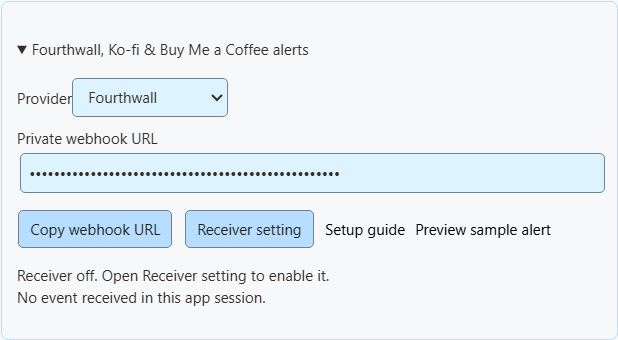
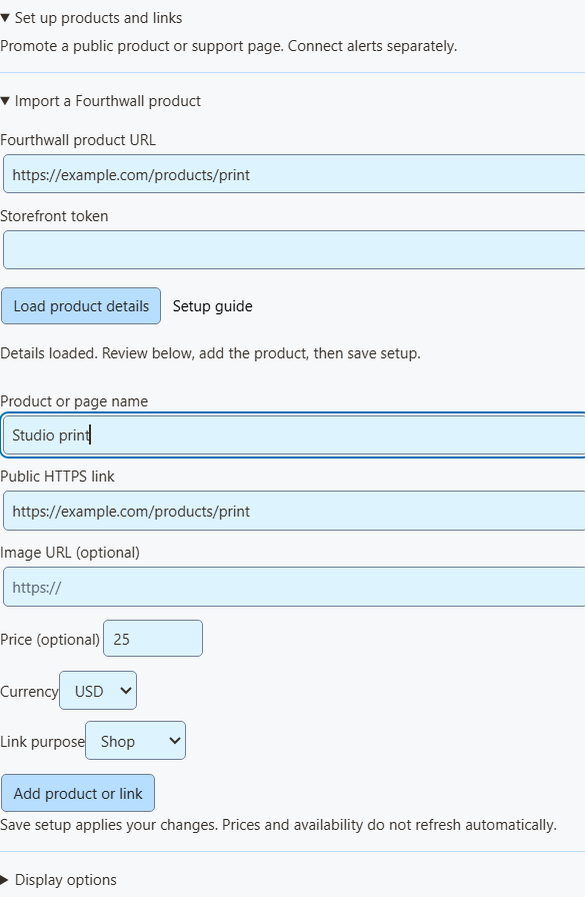

Products and alerts are separate
Use Monetization in SSN to promote public products and support pages, receive activity, or do both. This guide covers Fourthwall, Ko-fi and Buy Me a Coffee. For NinjaBacker, Throne, Amazon and eBay, see the monetization guide.
Connect alerts · Fourthwall · Ko-fi · Buy Me a Coffee · Import a product · OBS and QR codes · Troubleshooting
Connect activity alerts
- Open Monetization → Fourthwall, Ko-fi & Buy Me a Coffee alerts and choose your provider.
- Click Receiver setting. Enable the existing remote API control of extension switch, then keep SSN turned on.
- Return to Monetization and click Copy webhook URL. Paste this private address into your provider's webhook settings below.
- Check the receiver status. Receiver connected means SSN is listening, not that your provider configuration has been verified. The last-event line updates when a parsed, nonduplicate provider event reaches this running app; it resets on restart.
- Use Preview sample alert to check appearance in a separate sample page. This does not send a payment, update totals, run Event Flow, or verify webhook delivery.

These three existing session-URL endpoints rely on keeping the URL private; SSN's current setup does not accept their signing secrets. They are suitable for stream alerts, not proof of payment for fulfillment. Do not publish the webhook address or use it as a viewer QR destination.
Fourthwall
- In Fourthwall, open Settings → For Developers → Webhooks.
- Create a webhook and paste the Fourthwall URL copied from SSN.
- Select the supported events you need:
ORDER_PLACED,GIFT_PURCHASE,DONATIONandSUBSCRIPTION_PURCHASED. - Save the webhook and keep SSN running.
Orders appear as purchases, product gifting as gifts, and new subscriptions as memberships. For compatibility, ordinary Fourthwall orders still carry their existing donation value. Gift-card redemption orders do not add prepaid value again. Marked test events are skipped.
Fourthwall webhook documentation · Preview a sample purchase
Ko-fi
- Open Ko-fi Webhooks.
- Paste the Ko-fi URL copied from SSN into Webhook URL, then save/update it.
- Keep SSN running. Public tips, membership payments, shop orders and commissions use the same connection.
Private payments are excluded. Membership payments appear as membership activity; shop orders and commissions appear as purchases without adding donation totals. Ko-fi does not provide membership cancellation notifications through this webhook.
Testing: use SSN's isolated sample preview first. Ko-fi sample payments may resemble real payments and can trigger alerts, totals and actions if sent to the active receiver. Do not use the provider test on a session with paid rewards enabled.
Buy Me a Coffee
- Open Integrations in the creator dashboard and choose New webhook.
- Give it a name and paste the SSN Buy Me a Coffee URL as the endpoint.
- Select
donation.created,extra_purchase.created,commission_order.created,wishlist_payment.createdandmembership.startedas needed. - Save and leave delivery enabled. Use the provider's event-delivery history to investigate failures.
Shop and commission orders are purchases. Wishlist payments are gift contributions. Membership starts are membership announcements, not separate confirmed charges. Hidden notes stay hidden, and anonymous supporters stay anonymous. Dashboard tests marked live_mode: false are skipped without paid alerts. Refunds and lifecycle updates do not create payments or reverse existing totals.
Buy Me a Coffee webhook documentation · Preview a sample contribution
Import a Fourthwall product
- In Fourthwall's Settings → For Developers, create a Storefront token. Use the storefront token for public catalog access, not an administrative API key.
- In SSN, open Products & support links → Set up products and links → Import a Fourthwall product.
- Paste the public product URL and token, then click Load product details.
- Review the loaded name, image, price and public URL. Confirm the URL belongs to the same shop as the token, including any custom domain. The token determines which shop's catalog is queried.
- Choose Shop, Gift, Support or Join to describe what viewers will do. Click Add product or link, enable Products & support links, then Save setup.

This imports one available, public product at a time through Fourthwall's Storefront API. The token is used for that request, cleared afterward and not saved or sent to overlays. Different variant prices and bundle prices are left blank to avoid implying a fixed checkout total. Import is a snapshot: prices, stock and images do not refresh automatically. Reimport or edit when they change. The catalog holds up to 20 entries; adding again creates another entry.
Show products, public links and QR codes
You can also enter a public product or support link manually from any site, including Shopify, Tiltify or Patreon. Add an image URL and optional price, choose its purpose, enable the catalog and save. Adding a link does not connect a payment feed.
- Choose Products & support links under Overlay link for.
- Open Overlay link options. Choose Product showcase, Support card, Activity alerts, or the combined view.
- Click Copy OBS link and paste it into an OBS Browser Source. Start at 800 × 600. For separate promotional and activity layers, create a source for each view.
- Use Display options to pin the first product or rotate entries. Enable QR codes so viewers can scan the public destination. Use Copy public link beside an entry to share its clickable address in chat yourself.

The showcase includes the product image when provided; the smaller support card hides it. Activity alerts work independently and do not attach an unrelated rotating product's QR code. Keep the public link readable and test the QR from a phone while viewing your final OBS layout. Changing the OBS link's scale or cropping too tightly can make scanning difficult.
For multi-alerts or the activity feed, use their existing overlay links with the same SSN session. You do not need the product catalog enabled for these existing activity overlays. The generic Monetization activity view requires the catalog enabled. In Event Flow, Donation remains the trigger for rows with hasDonation; use Event Type for purchases or gift completion. See the event mapping.
If nothing appears
- Receiver off: enable remote API control of extension. Other API toggles serve different uses.
- Disconnected: keep SSN on and check network access. This status is the shared receiver connection, not the provider dashboard's delivery status.
- No event received: check the selected provider, private URL and provider delivery settings. Local preview success only checks appearance.
- Event skipped: marked tests, private payments, unsupported event types or invalid amounts are excluded. No buyer details are displayed in status.
- Event received but no overlay: check session/password, source filters, event categories, SSN rules and OBS visibility. Purchases are not subscriptions; most purchases are not donations.
- Duplicates: avoid feeding the same payment through both the direct provider and an aggregator. Retry deduplication uses provider delivery IDs.
- Import failed: check the product slug and Storefront token, and that the product is public and available. Manual entry remains available.
This is live stream activity, not an order ledger. Use the provider dashboard for payment confirmation, refunds and fulfillment. Shopify now has its own product-import and signed paid-order setup. Tiltify campaign activity and Patreon paid memberships remain future integrations.